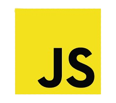

Über mich:
Derzeit befinde ich mich im zweiten Lehrjahr meiner Ausbildung zum Anwendungsentwickler. Während meiner Ausbildung habe ich mir verschiedene Programmiersprachen und Frameworks angeeignet. In meiner Freizeit bilde ich mich kontinuierlich weiter, um mein Wissen noch mehr zu vertiefen.
Meine Skills:
